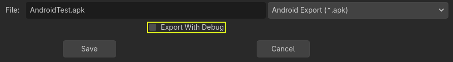

Xuất cho Android
Xem thêm
Trang này mô tả cách xuất một dự án Godot sang Android. Nếu bạn muốn biên dịch các tệp nhị phân export template từ mã nguồn, hãy đọc Biên dịch cho Android.
Xuất cho Android có ít yêu cầu hơn so với biên dịch Godot cho Android. Các bước sau đây trình bày chi tiết những gì cần thiết để thiết lập Android SDK và engine.
Chú ý
Các dự án viết bằng C# có thể được xuất sang Android kể từ Godot 4.2, nhưng hỗ trợ này vẫn đang thử nghiệm và có một số hạn chế.
Thiết lập trên Android
Khi xuất sang Android từ trình chỉnh sửa Android, bạn không cần cài đặt OpenJDK hay Android SDK, bất kể phương thức xuất được dùng (APK dựng sẵn hay Gradle build).
Tuy nhiên, nếu thực hiện Gradle build, bạn sẽ cần làm theo một số bước được mô tả trong Build Gradle cho Android.
Sau đó bạn có thể chuyển thẳng đến Cung cấp biểu tượng launcher.
Thiết lập trên Windows, macOS và Linux
Cài đặt OpenJDK 17
Tải về và cài đặt OpenJDK 17.
Ghi chú
Các phiên bản JDK cao hơn cũng được hỗ trợ, nhưng chúng tôi khuyên dùng JDK 17 để có khả năng tương thích và độ ổn định tối ưu.
Tải về Android SDK
Tải về và cài đặt Android SDK.
Bạn có thể cài đặt Android SDK bằng Android Studio Iguana (phiên bản 2023.2.1) trở lên.
Chạy nó một lần để hoàn tất thiết lập SDK theo các hướng dẫn này.
Đảm bảo rằng các gói cần thiết cũng đã được cài đặt.
Android SDK Platform-Tools phiên bản 35.0.0 trở lên
Android SDK Build-Tools phiên bản 35.0.1
Android SDK Platform 35
Android SDK Command-line Tools (mới nhất)
Đảm bảo rằng NDK và CMake đã được cài đặt và cấu hình.
CMake phiên bản 3.10.2.4988404
NDK phiên bản r28b (28.1.13356709)
Ngoài ra, bạn có thể cài đặt Android SDK bằng công cụ dòng lệnh sdkmanager.
Cài đặt gói công cụ dòng lệnh theo các hướng dẫn này.
Sau khi đã cài đặt các công cụ dòng lệnh, hãy chạy lệnh sdkmanager sau để hoàn tất quá trình thiết lập:
sdkmanager --sdk_root=<android_sdk_path> "platform-tools" "build-tools;35.0.1" "platforms;android-35" "cmdline-tools;latest" "cmake;3.10.2.4988404" "ndk;28.1.13356709"
Ghi chú
Nếu bạn dùng Linux, đừng dùng Android SDK do kho phần mềm của bản phân phối cung cấp vì nó thường đã lỗi thời.
Thiết lập trong Godot
Mở màn hình Editor Settings (nằm trong tab Godot trên macOS, hoặc tab Editor trên các nền tảng khác). Màn hình này chứa các cài đặt trình chỉnh sửa cho tài khoản người dùng trên máy tính (độc lập với dự án).

Cuộn xuống phần chứa các cài đặt Android:

Trong màn hình đó, cần thiết lập 2 đường dẫn:
Java SDK Pathphải là vị trí đã cài đặt OpenJDK 17.Android SDK Pathphải là vị trí đã cài đặt Android SDK. Thư mục này phải chứaplatform-tools/adb. - Ví dụ%LOCALAPPDATA%\Android\Sdk\trên Windows hoặc/Users/$USER/Library/Android/sdk/trên macOS.
Khi đã cấu hình xong, mọi thứ đã sẵn sàng để xuất sang Android!
Ghi chú
Nếu bạn gặp lỗi "Could not install to device.", hãy đảm bảo trên thiết bị chưa cài sẵn một ứng dụng có cùng tên gói Android (nhưng được ký bằng khóa khác).
Nếu trên thiết bị đã cài sẵn một ứng dụng có cùng tên gói Android nhưng khác khóa ký, bạn phải gỡ ứng dụng đó khỏi thiết bị Android trước khi xuất sang Android lần nữa.
Cung cấp biểu tượng launcher
Biểu tượng launcher được các ứng dụng launcher của Android dùng để đại diện cho ứng dụng của bạn trước người dùng. Godot chỉ yêu cầu biểu tượng độ phân giải cao (cho màn hình mật độ xxxhdpi) và sẽ tự động tạo các biến thể độ phân giải thấp hơn.
Có ba loại biểu tượng:
Main Icon: Biểu tượng "cổ điển". Biểu tượng này sẽ được dùng trên tất cả các phiên bản Android trước Android 8 (Oreo), không bao gồm Android 8. Kích thước tối thiểu 192×192 px.
Adaptive Icons: Bắt đầu từ Android 8 (bao gồm cả Android 8), Adaptive Icons đã được giới thiệu. Ứng dụng cần có biểu tượng nền và biểu tượng tiền cảnh riêng biệt để có giao diện native. Ứng dụng launcher của người dùng sẽ kiểm soát hoạt ảnh và mặt nạ (masking) của biểu tượng. Kích thước tối thiểu 432×432 px.
Themed Icons (tùy chọn): Bắt đầu từ Android 13 (bao gồm cả Android 13), Themed Icons đã được giới thiệu. Ứng dụng cần có một biểu tượng đơn sắc để bật tính năng này. Ứng dụng launcher của người dùng sẽ kiểm soát theme của biểu tượng. Kích thước tối thiểu 432×432 px.
Xem thêm
Điều quan trọng là phải tuân thủ một số quy tắc khi thiết kế adaptive icon. Google Design có một bài viết hay giúp hiểu các quy tắc đó và một số khả năng của adaptive icon.
Cảnh báo
Quy tắc thiết kế adaptive icon quan trọng nhất là đặt các thành phần then chốt của biểu tượng bên trong vùng an toàn: một hình tròn ở chính giữa có đường kính 66dp (264 pixel trên xxxhdpi) để tránh bị launcher cắt mất.
Nếu bạn không cung cấp các biểu tượng được yêu cầu (trừ Monochrome), Godot sẽ thay thế chúng bằng một chuỗi dự phòng, thử lần lượt lựa chọn tiếp theo khi lựa chọn hiện tại không có:
Main Icon: Main icon được cung cấp -> Biểu tượng dự án -> Main icon mặc định của Godot.
Adaptive Icon Foreground: Biểu tượng tiền cảnh được cung cấp -> Main icon được cung cấp -> Biểu tượng dự án -> Biểu tượng tiền cảnh mặc định của Godot.
Adaptive Icon Background: Biểu tượng nền được cung cấp -> Biểu tượng nền mặc định của Godot.
Bạn rất nên cung cấp tất cả các biểu tượng được yêu cầu với độ phân giải đã chỉ định. Bằng cách này, ứng dụng của bạn sẽ trông thật đẹp trên mọi thiết bị và phiên bản Android.
Xuất cho Google Play Store
Tất cả ứng dụng mới được tải lên Google Play sau tháng 8 năm 2021 phải là tệp AAB (Android App Bundle). Để xuất tệp AAB, bạn cần thiết lập Build Gradle cho Android.
Tải AAB hoặc APK lên Google Play Store yêu cầu bạn ký bằng một tệp keystore không phải debug; bạn có thể tạo tệp như vậy như sau:
keytool -v -genkey -keystore mygame.keystore -alias mygame -keyalg RSA -validity 10000
Keystore và khóa này được dùng để xác minh danh tính nhà phát triển của bạn, hãy nhớ mật khẩu và giữ nó ở nơi an toàn! Bạn nên chỉ dùng chữ cái in hoa, in thường và chữ số. Ký tự đặc biệt có thể gây lỗi. Hãy dùng các hướng dẫn Android Developer của Google để tìm hiểu thêm về ký ứng dụng.
Bây giờ hãy điền các mục sau trong Android Export Presets:

Release: Nhập đường dẫn đến tệp keystore bạn vừa tạo.
Release User: Thay bằng alias của khóa.
Release Password: Mật khẩu khóa. Lưu ý rằng hiện tại mật khẩu keystore và mật khẩu khóa phải giống nhau.
Đừng quên bỏ chọn hộp kiểm Export With Debug khi xuất.

Tối ưu kích thước tệp
Bạn có thể tối ưu kích thước ứng dụng bằng cách biên dịch một export template Android chỉ với những tính năng bạn cần. Xem Tối ưu hóa kích thước bản build để biết thêm thông tin.
Thực hiện Gradle build tùy chỉnh
Nếu bạn cần sửa code Java của template hoặc tích hợp với các Android SDK bên thứ ba, bạn có thể muốn dùng Gradle build tùy chỉnh thay vì template APK dựng sẵn mặc định. Điều này giúp bạn kiểm soát nhiều hơn quá trình build và dự án được tạo ra, và bạn có thể dùng nó làm nền tảng để tùy chỉnh thêm.
Xem Build Gradle cho Android để được hướng dẫn thiết lập Gradle build tùy chỉnh.
Biến môi trường
Bạn có thể dùng các biến môi trường sau để đặt tùy chọn xuất bên ngoài trình chỉnh sửa. Trong quá trình xuất, chúng sẽ ghi đè các giá trị bạn đã đặt trong menu xuất.
Tùy chọn xuất |
Biến môi trường |
|---|---|
Encryption / Encryption Key |
|
Options / Keystore / Debug |
|
Options / Keystore / Debug User |
|
Options / Keystore / Debug Password |
|
Options / Keystore / Release |
|
Options / Keystore / Release User |
|
Options / Keystore / Release Password |
|
Tùy chọn xuất
Bạn có thể tìm danh sách đầy đủ các tùy chọn xuất trong tài liệu tham chiếu lớp class_EditorExportPlatformAndroid.